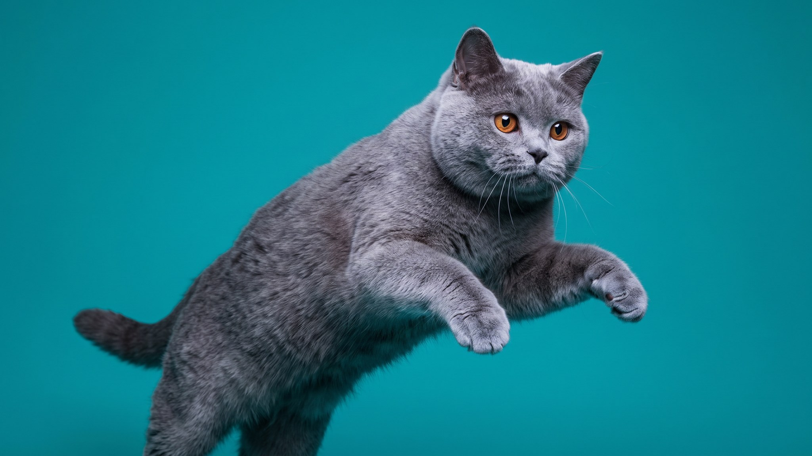

В Великобритании сейчас живёт менее 1000 оттерхаундов. Это меньше, чем суматранских тигров. Порода числится в списке редких уже несколько десятилетий: охота на выдру, для которой её вывели, запрещена с 1978 года, и численность с тех пор не восстановилась. Если вы всё-таки нашли щенка, будьте готовы: за добродушным лохматым обликом прячется гончая с трубным голосом, перепончатыми лапами и нюхом, который не выключается по команде.
🐾 Ваш питомец — оттерхаунд?
Заведите профиль в AnimaLife: приложение запомнит породу, возраст и вес и будет подсказывать по уходу именно для неё. Вопросы AI-ветеринару — круглосуточно и бесплатно.
Завести профиль → Завести в MAX →
У вас iPhone? AnimaLife есть в App Store
Оттерхаунд создан для работы в своре. Это объясняет почти всё в его характере: с людьми и другими собаками он ладит отлично, агрессии к сородичам практически нет. Дети воспринимаются спокойно. Но именно потому, что порода выводилась для компании, а не для охраны, оттерхаунд абсолютно бесполезен как сторожевой пёс. Он встретит незнакомца с таким же энтузиазмом, как и хозяина.
Гончая натура даёт о себе знать в другом: собака живёт по своим правилам и не торопится их менять. Оттерхаунд упрям. Дрессировка работает через терпение и лакомство, принуждение не даёт результата.
Оттерхаунда выводили для работы по воде и сырой земле. Нюх у него мощный даже по меркам гончих. Стоит собаке взять след, она идёт по нему и не реагирует на отзыв. Это рабочий инстинкт, а не непослушание.
Перепончатые лапы и водоотталкивающая двойная шерсть сложились за века селекции для охоты в реках. Оттерхаунд плавает с удовольствием и делает это хорошо. Доступ к воде для него не прихоть, а часть полноценной жизни. Порода подойдёт тем, кто живёт за городом или регулярно выезжает к водоёмам.
Нагрузка нужна серьёзная: оттерхаунд крупный (60–67 см, 30–52 кг) и выносливый. Квартира без ежедневных долгих прогулок плохо подойдёт этой породе. Нагрузки, связанные с запахом и поиском, работают особенно хорошо.
Шерсть у оттерхаунда жёсткая, лохматая, с плотным подшёрстком. Она защищает от воды и грязи, но без ухода сваливается в колтуны. Расчёсывать нужно раз-два в неделю по всему телу, уделяя особое внимание паху, ушам и подмышкам.
Борода намокает при еде и питье, собирает остатки корма и пачкает всё, к чему прикасается. Это принимают как данность или вытирают после каждой миски. Третьего варианта нет.
Оттерхаунд лает громко, а когда выходит на след, воет трубным низким голосом, слышным на большом расстоянии. В частном доме с участком это терпимо. В городской квартире или плотной застройке такой голос станет проблемой для соседей быстрее, чем вы успеете привыкнуть.
Порода вокально активна по природе: лай и вой не дрессируются в ноль, только снижаются при достаточной нагрузке и занятости. Обсудите с ветеринаром поведенческие стратегии, если живёте в многоквартирном доме.
🐾 У вас оттерхаунд?
AnimaLife соберёт уход под породу: к каким болезням есть склонность, что проверять по возрасту, чем кормить и когда пора к врачу. Бесплатно, прямо в мессенджере.
Собрать план ухода → Собрать в MAX →
У вас iPhone? AnimaLife есть в App Store
🐾 Понравился разбор?
Подпишитесь на канал — каждый день разбираем по одному тревожному симптому у кошек и собак: что в пределах нормы, а когда пора к врачу. Подпишитесь, чтобы не пропустить разбор, который может спасти здоровье вашего питомца.
Материал носит информационный характер и не заменяет очную консультацию ветеринара.